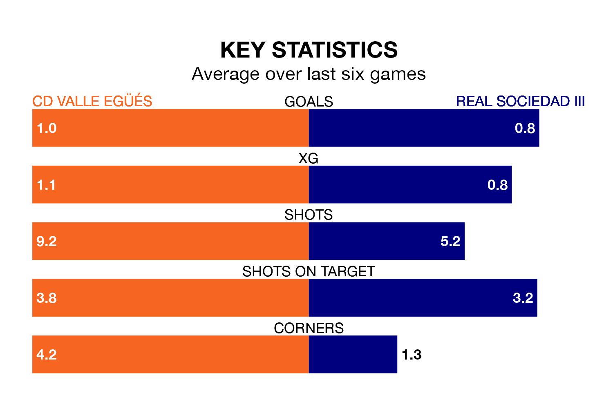

Real Sociedad III travel to CD Valle Egüés on Saturday in Segunda División RFEF Group 2.
The visitors come into the game on the back of a draw in their last match, having tied with CD Izarra 0-0 away.
Valle Egüés, meanwhile, won their last match, 1-0 against Náxara CD.
With 14 goals in 17 games so far this season, Valle Egüés are scoring at below the league average rate with 0.8 goals per game. And they are conceding at an average rate, letting in 19 goals at a rate of 1.1 per game.
Sociedad III, meanwhile, are average scorers, with 1.1 goals per game. They have conceded 0.7 goals per game.
The home team are 12th in the table after 17 games, of which they have won five and drawn two, earning 17 points.
The visitors are five places ahead of Valle Egüés in seventh, with eight wins and three draws putting them on 27 points.
Valle Egüés are in mixed form in Segunda División RFEF Group 2, with two wins and a draw from their last six games.
With three wins and a draw over that period, Sociedad III's form is better – they have taken 10 points from 18, compared to the hosts' seven.
Updated: 11:31, 09/01/24